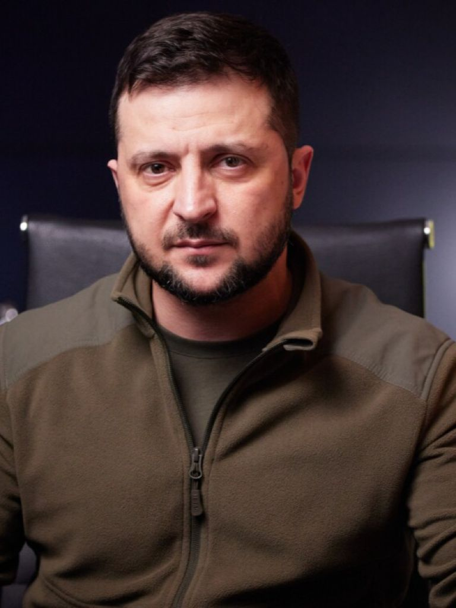
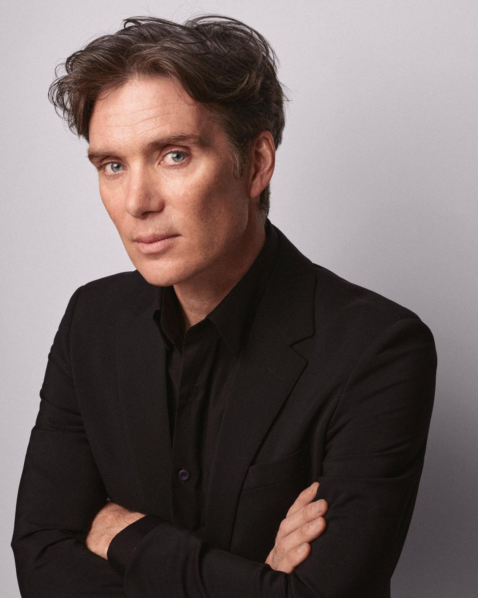

Раян Томас Ґослінґ (нар. 12 листопада 1980, Лондон, Онтаріо, Канада) — канадський кіноактор, лауреат премії National Board of Review (2006) і «Супутник» (2007). 2017 року був номінований на премію «Оскар» за «Найкращу головну чоловічу роль» у мюзиклі «Ла-Ла Ленд» (2016). За цю ж роль отримав «Золотий глобус» в категорії «Найкраща чоловіча роль».

Зеленський Володимир Олександрович — (нар. 25 січня 1978, Кривий Ріг, Дніпропетровська область) — український державний діяч, шостий і чинний Президент України з 20 травня 2019 року. До вступу на посаду здобув популярність як шоумен, актор, комік, режисер, продюсер і сценарист. Був співвласником і художнім керівником «Студії Квартал-95» (2003—2019) та генеральним продюсером телеканалу «Інтер» (2010—2012).

Кілліан Мерфі - (нар. 25 травня 1976, Дуглас, графство Корк, Ірландія) ірландський актор театру і кіно. Колишній співак, гітарист та автор пісень гурту The Sons of Mr. Green Genes. Наприкінці 90-х почав свою акторську кар'єру граючи на сцені, в короткометражних та незалежних фільмах.